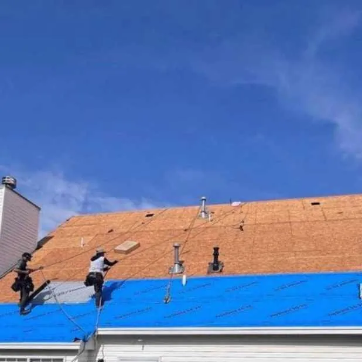
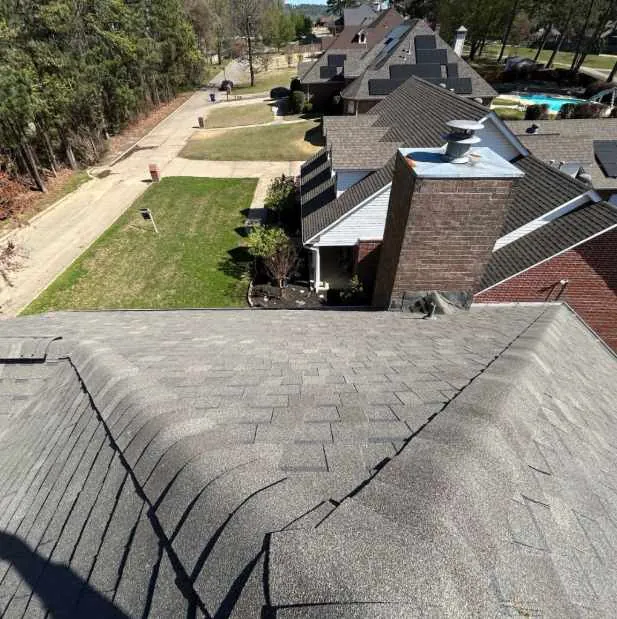

I contacted EZ Roofing in Cabot, Arkansas, for a residential roofing inspection after noticing a few shingles in my yard during March. They sent a representative to perform a free roof inspection and property evaluation. After they documented storm damage and explained the condition of my roof, they helped me navigate the insurance process and completed a full roof replacement in about five hours.
Why Did I Call For A Residential Roof Inspection?
Living in Cabot, I have learned that March storms are fairly predictable. The high winds and hail in Lonoke County usually lead to some level of property damage. I found a few asphalt shingle tabs in my grass after a particularly heavy storm and decided it was time to get the roof checked.
I was concerned that ignoring these missing pieces would lead to moisture getting under the decking. My home is about twelve years old, which is a common age for wear and tear to start showing up. I specifically looked for a local roofing company that could provide a professional assessment without an upfront fee.
Since I had never dealt with a roof claim before, I needed to know if the damage was structural or just cosmetic. Finding a roofing contractor that offered a free evaluation allowed me to get the facts before making any financial decisions.
What Happens During A Property Evaluation?
The process with EZ Roofing started with a full walk-around of the house. They did not just look at the shingles. They performed a physical evaluation of the entire exterior. This included checking the soffit, fascia, and gutters for signs of water damage or debris buildup.
The inspector checked my windows and siding for impact marks. These signs often point to how much hail a property has actually taken. He then used a ladder to access the roof for a closer look.
While on the roof, the technician looked for:
- Bruised shingles from hail impact
- Creased shingles caused by high wind speeds
- Loose or damaged metal flashing around the chimney
- Worn seals around the roof vents
He took digital photos of every issue he found. After he finished the evaluation, he showed me the evidence on a tablet. Seeing the creased shingles made it clear why I was finding pieces in the yard.
Because the damage was consistent with recent weather events, he explained that it qualified as a storm claim. He also offered to meet with the insurance adjuster at a later date. Having a professional there ensured the adjuster saw the same damage documented during the initial inspection.
How Long Does A Full Roof Install Take?

The timeline for the actual work was much faster than I expected. Once the insurance was handled and materials were delivered, the crew arrived early on a weekday morning.
The job followed a specific sequence:
- Protecting the landscaping and deck with tarps.
- Stripping the old shingles down to the wood decking.
- Inspecting the wood for rot or soft spots.
- Installing new underlayment and shingles.
- Cleaning up the perimeter with a magnetic nail sweeper.
The entire process for my home took about five hours. They also trimmed a few tree limbs that were touching the roof surface. Addressing the issue early helps prevent further damage and allows the area to dry properly.
Despite the speed, the crew was thorough with the cleanup. They checked the driveway and lawn multiple times to ensure no construction debris was left behind.
Estimated Costs For Residential Roofing In Cabot
Pricing for roofing in Arkansas depends on a few specific variables. While every house is different, there are standard factors that influence the final quote.
- Total Square Footage: This determines the amount of material and labor required.
- Roof Pitch: Steeper roofs require more safety equipment and take longer to navigate.
- Waste Factor: Roofs with many gables or valleys result in more material waste.
- Local Labor Rates: Prices in Lonoke County are generally consistent but can fluctuate based on the season.
In this area, a full roof replacement typically ranges between $7,000 and $15,000. Because my situation involved storm damage, my out-of-pocket cost was limited to my insurance deductible.
EZ Roofing was clear about the costs from the start. They also noted that minor issues like a few broken shingles can often be repaired for a much lower price if the rest of the roof is still in good condition.
Common Residential Roofing Questions

How do I know if I have storm damage?
You might see missing shingles, dented gutters, or granules collecting at the bottom of your downspouts. However, a lot of damage isn’t visible from the ground and requires a close-up inspection.
Do I need a full replacement for a few missing shingles?
Not always. If the roof is relatively new and the damage is isolated, a repair might be enough. An inspection will determine if the shingles are still pliable enough to be repaired.
How does the insurance process work?
After an inspection confirms damage, you file a claim with your provider. An adjuster will come out to verify the findings. Having your contractor present during that meeting helps ensure nothing is overlooked.
Is an annual inspection necessary?
Yes. Even if there hasn’t been a major storm, heat, and age can cause shingles to seal poorly. A yearly check-up helps track the wear and tear over time.
Why Use A Local Contractor In Cabot, AR?
Using a local company like EZ Roofing was a practical choice for my home. They are familiar with the building codes in Cabot and the typical weather patterns in this part of Arkansas.
They also handle other exterior services like siding and gutters. This was helpful because I could get a full property evaluation rather than just a quick look at the shingles. They provided a reliable, professional service without any high-pressure sales tactics.
If you have concerns about your roof or just want to check its condition after the winter, it is a good idea to get a professional evaluation. Dealing with minor maintenance now is a simple way to keep your home in top shape.
Schedule a free roof inspection with EZ Roofing to get an accurate assessment of your property today.